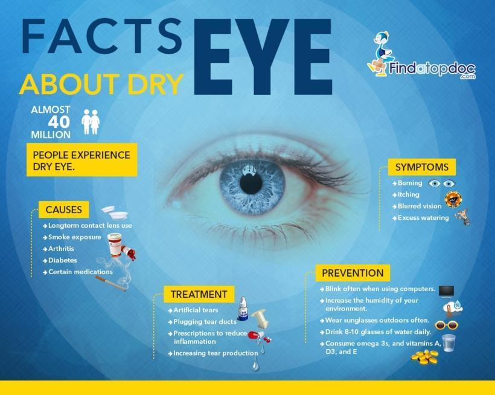

The Importance of Regular Eye Exams There are many reasons why it’s important to schedule a yearly eye exam. For one, exams can help detect eye problems at their earliest stages when they’re most treatable. This gives eye care professionals a better chance to correct poor vision by prescribing glasses or contact lenses — or to identify potentially serious health conditions like glaucoma or cataracts. In addition, regular check-ins with your eye doctor are important for those whose vision is still changing. With more frequent check-ins, you can ensure you have an accurate, up-to-date prescription for your glasses or contacts. This will improve your vision while also decreasing symptoms of eyestrain or headaches, which are often associated with weak prescriptions.
Who Is Most At Risk? Even though many people understand that their eye health has a big impact on their overall wellbeing, many don’t schedule an eye exam until they experience problems with their vision. In fact, the CDC estimates that only half of the 61 million Americans who are at risk of losing their eyesight have visited an eye care specialist in the past year. In particular, annual eye exams are important for anyone with a family history of diabetes or glaucoma. It is estimated that more than 30 million Americans with diabetes are at risk for developing diabetic eye disease, which is the leading cause of blindness